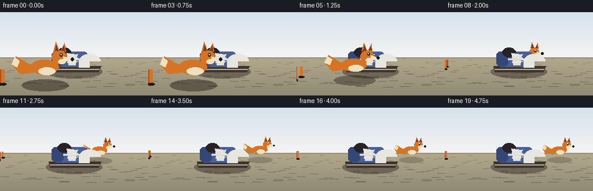
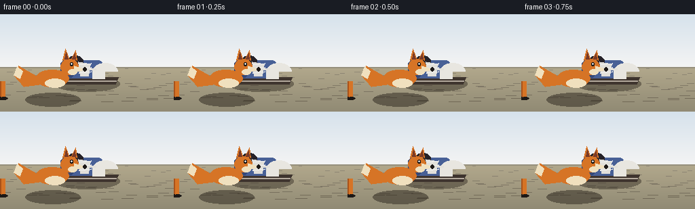

CODING AGENTS AS PIXEL WORLD MODELS
traex/Seed-2.1-Pro-0915 · dynamic_spatial_relationship_0028
点击播放 · 原生 RGB 像素
逐轮保存的候选
回放视频、检查图与代码变化。
每份候选均可单独播放。实际图片检查记录在下方工具轨迹中。
候选 01播放与检查图
点击播放 · 原生 RGB 像素


展开代码变化
--- 上一保存版本
+++ 本次保存版本
@@ -0,0 +1,179 @@
+"""Procedural t2v generation: a fox runs from in front of a shoe to behind it.
+
+Rendered with pure numpy + PIL at 256x144. Depth is simulated with a ground
+plane (y grows toward the viewer), painter's-order sorting, and a scale factor
+that shrinks with distance. The shoe occludes the fox during the pass.
+"""
+import json
+import math
+from pathlib import Path
+
+import numpy as np
+from PIL import Image, ImageDraw
+
+import artifact_io
+
+CASE_DIR = Path(__file__).parent
+W, H = 256, 144
+
+# Depth: d=0 far (back), d=1 near (front). Ground contact row for a depth.
+HORIZON, FLOOR = 78.0, 132.0
+
+
+def ground_y(d):
+ return HORIZON + (FLOOR - HORIZON) * d
+
+
+# Fox path: contact (x, depth) across the 20 frames.
+# Hold in front (frames 0-3), run around (4-15), settle behind (16-19).
+PATH = [
+ (78, 0.86), (78, 0.86), (78, 0.86), (78, 0.86),
+ (88, 0.80), (100, 0.70), (113, 0.58), (126, 0.46),
+ (139, 0.36), (151, 0.29), (162, 0.25), (172, 0.225),
+ (181, 0.21), (188, 0.20), (193, 0.20), (196, 0.20),
+ (198, 0.20), (198, 0.20), (198, 0.20), (198, 0.20),
+]
+SHOE_X, SHOE_D = 128.0, 0.42
+
+ORANGE = (214, 116, 38)
+DARK_ORANGE = (168, 82, 26)
+CREAM = (240, 224, 190)
+BLACK = (28, 24, 22)
+EAR_INNER = (120, 58, 40)
+
+
+def draw_background(img):
+ d = ImageDraw.Draw(img)
+ for y in range(int(HORIZON) + 1):
+ t = y / HORIZON
+ d.line([(0, y), (W, y)], fill=(int(214 + 30 * t), int(226 + 18 * t), int(236 + 8 * t)))
+ for y in range(int(HORIZON) + 1, H):
+ t = (y - HORIZON) / (H - HORIZON)
+ d.line([(0, y), (W, y)], fill=(int(178 - 34 * t), int(168 - 30 * t), int(140 - 24 * t)))
+ d.line([(0, int(HORIZON)), (W, int(HORIZON))], fill=(150, 144, 124), width=2)
+ rng = np.random.default_rng(7)
+ for _ in range(60):
+ gx = int(rng.integers(0, W))
+ gd = float(rng.uniform(0.05, 0.95))
+ gy = ground_y(gd)
+ length = 4 + 14 * gd
+ shade = int(150 - 40 * gd)
+ d.line([(gx, gy), (gx + length, gy)], fill=(shade, shade - 8, shade - 26))
+
+
+def draw_shadow(d, cx, cy, w, alpha=90):
+ del d
+ pad = Image.new("RGBA", (W, H), (0, 0, 0, 0))
+ pd = ImageDraw.Draw(pad)
+ pd.ellipse([cx - w / 2, cy - w * 0.12, cx + w / 2, cy + w * 0.12], fill=(40, 34, 26, alpha))
+ return pad
+
+
+def draw_shoe(img):
+ """A side-view sneaker, toe pointing right, resting at SHOE_D."""
+ s = 46.0
+ cy = ground_y(SHOE_D)
+ cx = SHOE_X
+ layer = Image.new("RGBA", (W, H), (0, 0, 0, 0))
+ d = ImageDraw.Draw(layer)
+ img.alpha_composite(draw_shadow(d, cx, cy + 2, s * 2.1, alpha=110))
+ d.polygon([(cx - s * 0.95, cy - s * 0.16), (cx + s * 1.0, cy - s * 0.16),
+ (cx + s * 0.92, cy + s * 0.06), (cx - s * 0.9, cy + s * 0.06)], fill=(62, 52, 46, 255))
+ d.line([(cx - s * 0.9, cy - s * 0.05), (cx + s * 0.95, cy - s * 0.05)],
+ fill=(180, 170, 158, 255), width=2)
+ d.rounded_rectangle([cx - s * 0.85, cy - s * 0.72, cx + s * 0.55, cy - s * 0.14],
+ radius=int(s * 0.22), fill=(72, 96, 150, 255))
+ d.pieslice([cx + s * 0.18, cy - s * 0.62, cx + s * 0.98, cy - s * 0.08],
+ 180, 360, fill=(232, 230, 224, 255))
+ d.rectangle([cx + s * 0.18, cy - s * 0.35, cx + s * 0.58, cy - s * 0.12],
+ fill=(232, 230, 224, 255))
+ d.rounded_rectangle([cx - s * 0.85, cy - s * 0.7, cx - s * 0.42, cy - s * 0.16],
+ radius=int(s * 0.14), fill=(52, 72, 120, 255))
+ d.ellipse([cx - s * 0.62, cy - s * 0.86, cx - s * 0.12, cy - s * 0.5], fill=(38, 34, 40, 255))
+ d.polygon([(cx - s * 0.28, cy - s * 0.66), (cx + s * 0.12, cy - s * 0.6),
+ (cx + s * 0.06, cy - s * 0.2), (cx - s * 0.2, cy - s * 0.2)],
+ fill=(226, 224, 218, 255))
+ for k in range(3):
+ ly = cy - s * (0.56 - k * 0.13)
+ d.line([(cx - s * 0.24, ly), (cx + s * 0.14, ly - s * 0.05)], fill=(240, 240, 240, 255), width=2)
+ d.line([(cx - s * 0.4, cy - s * 0.42), (cx + s * 0.3, cy - s * 0.42)],
+ fill=(240, 240, 240, 200), width=3)
+ img.alpha_composite(layer)
+
+
+def draw_fox(img, x, depth, frame, moving):
+ s = 15.0 + 30.0 * depth
+ cy = ground_y(depth)
+ bob = math.sin(frame * 1.7) * s * 0.05 if moving else 0.0
+ cy += bob
+ phase = frame * 1.05 if moving else 0.0
+
+ layer = Image.new("RGBA", (W, H), (0, 0, 0, 0))
+ d = ImageDraw.Draw(layer)
+ img.alpha_composite(draw_shadow(d, x, ground_y(depth) + 2, s * 2.0, alpha=int(100 * depth + 40)))
+
+ def E(box, fill):
+ d.ellipse([box[0] * s + x, box[1] * s + cy, box[2] * s + x, box[3] * s + cy], fill=fill)
+
+ def P(points, fill):
+ d.polygon([(px * s + x, py * s + cy) for px, py in points], fill=fill)
+
+ # Legs: far pair darker, drawn first.
+ for far, color in ((True, DARK_ORANGE), (False, ORANGE)):
+ for i in range(2):
+ swing = math.sin(phase + i * math.pi + (math.pi if far else 0.0))
+ lx = (-0.42 + i * 0.5) * s + (0.12 * s * swing if moving else 0)
+ lift = max(0.0, swing) * s * 0.18 if moving else 0
+ xoff = (-0.06 if far else 0.04) * s
+ d.line([(lx + xoff, cy - 0.62 * s), (lx + xoff, cy - lift)],
+ fill=color, width=max(1, int(0.16 * s)))
+ d.ellipse([lx + xoff - 0.12 * s, cy - lift - 0.04 * s,
+ lx + xoff + 0.16 * s, cy - lift + 0.05 * s], fill=BLACK)
+
+ # Tail: bushy sweep to the rear (left) with white tip.
+ P([(-0.55, -0.78), (-1.25, -1.18), (-1.42, -0.82), (-1.05, -0.42), (-0.5, -0.48)], ORANGE)
+ P([(-1.28, -1.14), (-1.42, -0.82), (-1.18, -0.72), (-1.08, -0.98)], CREAM)
+
+ # Torso and chest ruff.
+ E((-0.62, -1.02, 0.58, -0.42), ORANGE)
+ E((-0.28, -0.72, 0.42, -0.4), CREAM)
+
+ # Head (facing right).
+ E((0.28, -1.42, 0.92, -0.86), ORANGE)
+ P([(0.36, -1.38), (0.46, -1.78), (0.6, -1.4)], ORANGE)
+ P([(0.66, -1.4), (0.82, -1.74), (0.86, -1.36)], ORANGE)
+ P([(0.42, -1.42), (0.48, -1.66), (0.56, -1.42)], EAR_INNER)
+ P([(0.71, -1.43), (0.8, -1.63), (0.83, -1.4)], EAR_INNER)
+ P([(0.78, -1.18), (1.18, -1.06), (0.8, -0.92)], CREAM)
+ E((1.08, -1.12, 1.22, -0.99), BLACK)
+ E((0.55, -1.06, 0.86, -0.86), CREAM)
+ E((0.62, -1.3, 0.73, -1.18), BLACK)
+ E((0.65, -1.28, 0.69, -1.23), (255, 255, 255))
+
+ img.alpha_composite(layer)
+
+
+def main():
+ spec = json.loads((CASE_DIR / "task_spec.json").read_text())
+ n, h, w = spec["frames"], spec["height"], spec["width"]
+ frames = []
+ for f in range(n):
+ img = Image.new("RGBA", (w, h), (0, 0, 0, 255))
+ draw_background(img)
+ fx, fd = PATH[f]
+ moving = 3 < f < 16
+ # Painter's order: far first; shoe occludes the fox once it is behind.
+ if fd < SHOE_D:
+ draw_fox(img, fx, fd, f, moving)
+ draw_shoe(img)
+ else:
+ draw_shoe(img)
+ draw_fox(img, fx, fd, f, moving)
+ frames.append(np.asarray(img.convert("RGB"), dtype=np.uint8))
+ frames = np.stack(frames, axis=0)
+ artifact_io.save(frames, CASE_DIR)
+ print("saved", frames.shape, "to", CASE_DIR)
+
+
+if __name__ == "__main__":
+ main()
可观测工具轨迹
实际执行的命令与返回图片。
命令 1exit 0
/bin/bash -lc 'cat prompt.txt; echo "---"; cat GENERATION_RULES.md; echo "---"; cat task_spec.json; echo "---"; ls -la'
命令 2exit 0
/bin/bash -lc 'cat artifact_io.py'
命令 3exit 0
/bin/bash -lc 'cd . && python generate.py && ls -la'
命令 4exit 0
/bin/bash -lc "cd . && python - <<'EOF'
import numpy as np
from PIL import Image
import generate as g
def orange_mask(a):
r,gg,b = a[...,0].astype(int), a[...,1].astype(int), a[...,2].astype(int)
return (r>140)&(r>gg*1.3)&(gg>b)
def blue_mask(a): # shoe upper
r,gg,b = a[...,0].astype(int), a[...,1].astype(int), a[...,2].astype(int)
return (b>110)&(b>r*1.4)&(gg>r)
for f in [0,3,6,7,8,9,11,15,19]:
a = np.asarray(Image.open(f\"frames/{f:02d}.png\").convert(\"RGB\"))
om = orange_mask(a); ys,xs = np.where(om)
bm = blue_mask(a); bys,bxs = np.where(bm)
# overlap region between fox bbox and shoe bbox: is it blue (occluded)?
if len(xs) and len(bxs):
ox0,ox1 = xs.min(),xs.max(); bx0,bx1 = bxs.min(),bxs.max()
ix0,ix1 = max(ox0,bx0), min(ox1,bx1)
overlap = ix1>ix0
if overlap:
band = a[:, ix0:ix1]
omb = orange_mask(band); bmb = blue_mask(band)
print(f\"f{f:02d} d={g.PATH[f][1]:.2f} x={g.PATH[f][0]:3d} foxW={ox1-ox0:3d} foxY=({ys.min():3d},{ys.max():3d}) overlap: orange={omb.sum():4d} blue={bmb.sum():4d}\")
else:
print(f\"f{f:02d} d={g.PATH[f][1]:.2f} x={g.PATH[f][0]:3d} foxW={ox1-ox0:3d} foxY=({ys.min():3d},{ys.max():3d}) no horizontal overlap\")
else:
print(f\"f{f:02d} missing masks fox={om.sum()} shoe={bm.sum()}\")
EOF"命令 5exit 0
/bin/bash -lc "cd . && python - <<'EOF' import numpy as np from PIL import Image a = np.asarray(Image.open(\"frames/19.png\").convert(\"RGB\")) r,gg,b = a[...,0].astype(int), a[...,1].astype(int), a[...,2].astype(int) om = (r>140)&(r>gg*1.3)&(gg>b) ys,xs = np.where(om) cols = np.where(om.any(axis=0))[0] # find gaps in columns to identify separate components splits = np.where(np.diff(cols)>3)[0] print(\"col clusters:\", [(cols[0], cols[splits[0]])] if len(splits) else [], [(cols[splits[-1]+1], cols[-1])] if len(splits) else []) print(\"unique colors in mask (sample):\", np.unique(a[om].reshape(-1,3), axis=0)[:12]) # per-column counts, print sparse ones cnt = om.sum(axis=0) sparse = np.where((cnt>0)&(cnt<4))[0] print(\"sparse cols:\", sparse[:20], \"...\" if len(sparse)>20 else \"\") EOF"
命令 6exit 0
/bin/bash -lc "cd . && python - <<'EOF'
import numpy as np
from PIL import Image
chars = \" .:-=+*#%@\"
for f in [0,8,19]:
a = np.asarray(Image.open(f\"frames/{f:02d}.png\").convert(\"RGB\")).astype(float).mean(2)
a = a[::4, ::5]
print(f\"--- frame {f} ---\")
for row in a:
print(\"\".join(chars[min(9, int(v/26))] for v in row))
EOF"保存候选 1 份；完成命令 6 次；可验证图片返回 0 张。原始 API 响应与完整日志保留在本地。